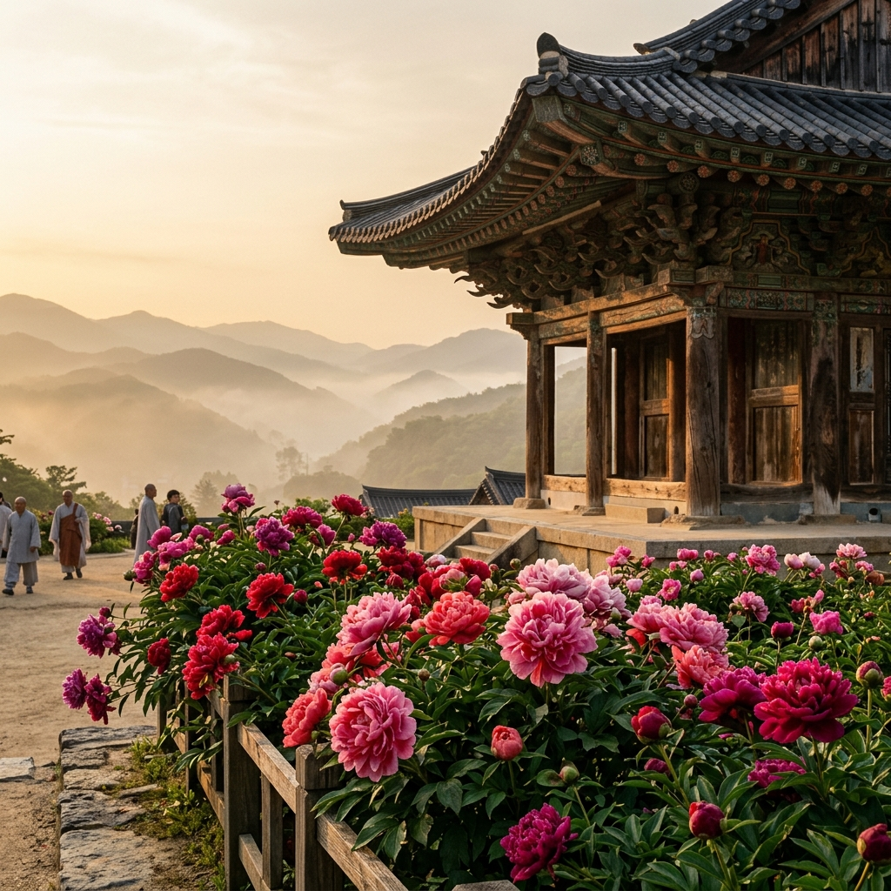
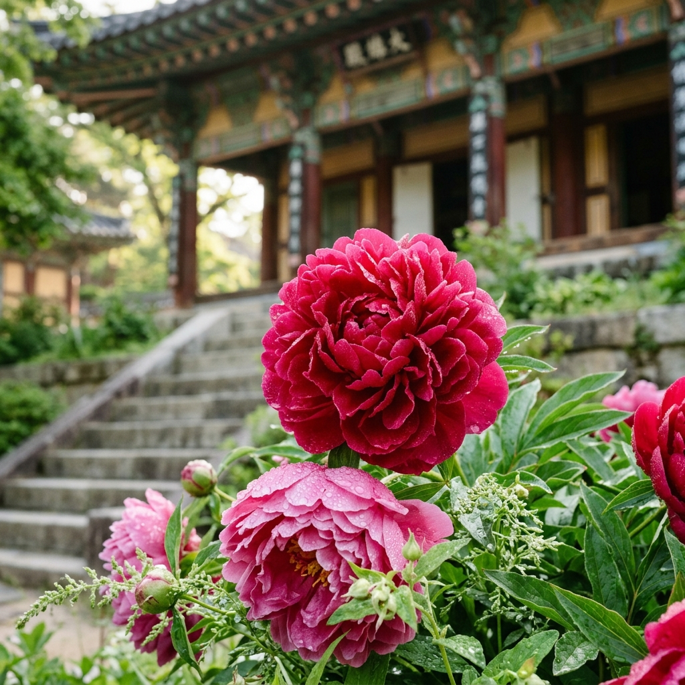
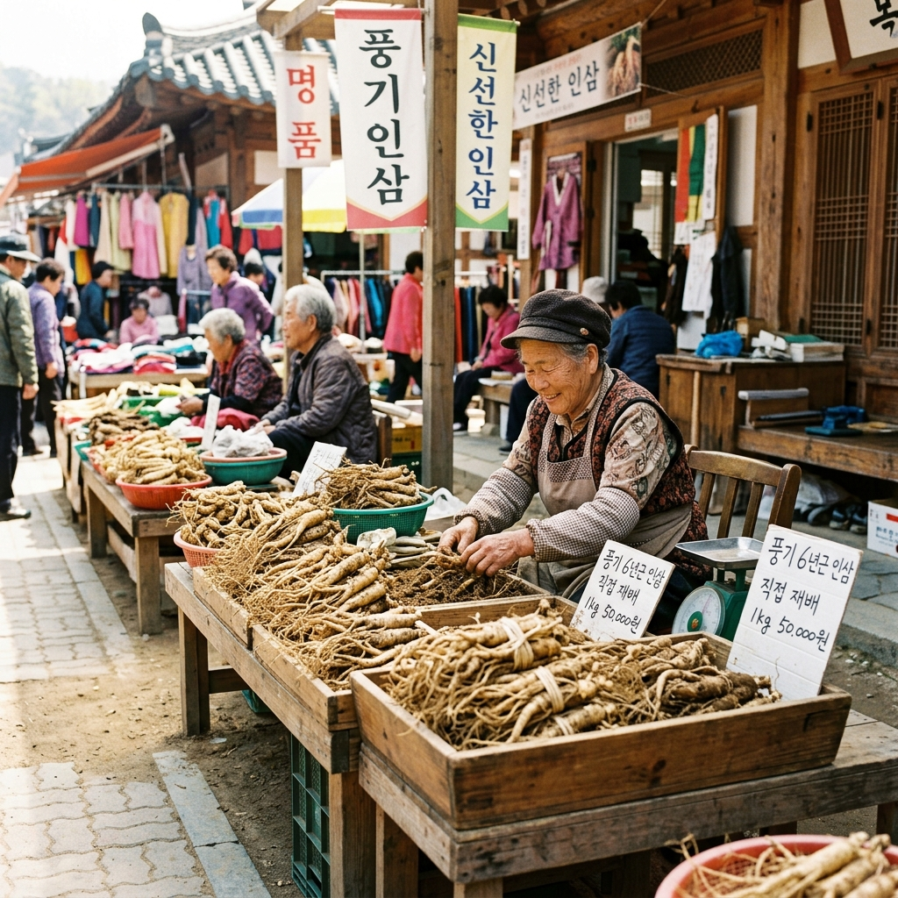

영주 부석사 모란 2026: 무량수전 앞 황금빛 모란 만개기 & 풍기 인삼시장 연계 가족 코스 완벽 가이드
신라 문무왕 16년(676년), 의상대사가 창건한 영주 부석사(浮石寺)는 국보 제18호 무량수전을 품은 천년 고찰입니다. 그런데 이 유서 깊은 사찰이 매년 5월이면 전혀 다른 이유로 전국의 꽃 사진가들을 불러 모읍니다. 바로 무량수전 앞마당과 경내 곳곳에 흐드러지게 피는 모란(牡丹)꽃 때문입니다. 붉고 화사한 모란이 고색창연한 목조 건축물 배경과 어우러지는 광경은, 단순한 '꽃구경'을 넘어 시간을 초월한 듯한 절경을 연출합니다. 이 글에서는 2026년 부석사 모란 개화 현황부터 풍기 인삼시장 연계 코스, 인근 맛집까지 완벽하게 정리해 드립니다.
| 항목 | 내용 |
|---|
| 위치 | 경상북도 영주시 부석면 북지리 148 (부석사로 345) |
| 관람 시간 | 일출~일몰 (하절기 기준 06:00~19:00, 동절기 단축) |
| 입장료 | 성인 1,500원 / 청소년 1,000원 / 어린이 700원 (문화재 보호구역 입장료) |
| 모란 개화 예상 | 2026년 5월 5일~15일 (최성기 5월 8일~12일 예상) |
| 주차 | 부석사 공영주차장 (무료, 약 100면) / 주말 08:00 이전 입장 권장 |
🌺 1. 부석사 모란이 특별한 이유 — 천년 고찰이 빚어낸 꽃의 무대
영주 부석사를 찾는 이유는 많습니다. 국보 제18호 무량수전의 배흘림기둥, 안양루에서 내려다보이는 소백산 연봉의 절경, 의상대사와 선묘 낭자의 애달픈 전설…. 그러나 5월이 되면 이 모든 것 위에 모란의 향연이 더해집니다. 모란(牡丹, Paeonia suffruticosa)은 원산지가 중국 서부이지만 삼국시대 이전부터 한국에 도입되어 '꽃 중의 왕(花王)'이라 불렸습니다. 고려청자와 조선백자의 단골 문양이었고, 왕실 연회상에 반드시 등장하던 꽃이었습니다.
부석사의 모란이 유독 아름다운 이유는 크게 두 가지입니다. 첫째, 수령 50년을 훌쩍 넘긴 노목(老木) 모란이 무량수전 앞 석축 경사면과 경내 화단 곳곳에 자리 잡고 있어 꽃송이 하나하나가 성인 주먹보다 큽니다. 오랜 세월 사찰 토양의 영양을 머금어 자란 이 모란들은 도시의 화분 모란과는 근본적으로 다른 밀도와 색감을 자랑합니다. 둘째, 배경이 국보급 목조 건축물이라는 점입니다. 고려 시대 건축 양식을 그대로 간직한 무량수전의 적갈색 단청과 우아한 지붕 곡선 앞에 붉고 자홍빛 모란이 만개한 광경은, 어떤 인공적인 꽃 전시장에서도 재현할 수 없는 자연스러운 품격을 발산합니다.
또한 부석사 경내는 해발 약 850m의 봉황산(鳳凰山) 중턱에 위치해 평지보다 기온이 3~5℃ 낮습니다. 덕분에 모란의 개화 속도가 느려 꽃잎이 더 두꺼워지고 색이 진해지는 효과가 있습니다. 도심의 모란은 바람 한 번에 꽃잎이 흩날리지만, 부석사 모란은 선선한 산바람 속에서 일주일 이상 형태를 유지합니다. 이것이 전국의 꽃 사진가들이 먼 길을 마다 않고 이곳을 찾는 진짜 이유입니다.

[영주 부석사 무량수전과 모란] / AI 제작 이미지
🗓 2. 2026년 모란 개화 현황 & 최적 방문 시기
2026년 봄은 4월 중순까지 이어진 저온 현상의 영향으로 경북 내륙 산지의 봄꽃 개화가 예년보다 5~7일 지연되고 있습니다. 기상청 영주 지점 자료에 따르면 5월 1일 현재 부석사 일대의 일평균 기온은 14~16℃로, 모란 개화에 최적인 '일 최고기온 18~22℃' 구간에 막 진입하고 있습니다.
2026년 부석사 모란 개화 예상 타임라인은 다음과 같습니다. 5월 1일~4일: 꽃망울이 초록 껍질을 뚫고 붉은 빛을 드러내기 시작하는 초개화(初開花) 단계. 5월 5일~7일: 하단부 화단을 중심으로 꽃송이 30~40% 개화하는 초반 피크. 5월 8일~12일: 무량수전 앞 주요 포토존 전체가 만개하는 절정(絶頂). 5월 13일~18일: 꽃잎이 천천히 떨어지며 낙화 물결을 만드는 후반 감상기. 모란은 벚꽃처럼 한꺼번에 지지 않고 2~3일에 걸쳐 서서히 낙화하기 때문에, 만개 후에도 낙화 카펫이 또 하나의 볼거리가 됩니다.
방문 최적 시간대는 오전 7시~9시 사이입니다. 이 시간대는 관광버스가 도착하기 전이라 인파가 거의 없어 모란 앞에서 여유롭게 사진을 찍을 수 있습니다. 또한 아침 이슬이 꽃잎에 맺혀 있어 모란의 색감이 가장 생생하게 살아 있습니다. 오후 2시~4시는 관광버스와 단체 방문객이 집중되어 30~40분 대기가 발생할 수 있으니, 가능하면 평일 오전을 노리시는 것을 권해 드립니다.
⛩ 3. 부석사 경내 관람 포인트 — 국보와 보물의 행렬
부석사는 모란만으로 방문 가치가 충분하지만, 경내에는 국보 및 보물로 지정된 문화재가 무더기로 모여 있어 꽃 구경과 역사 탐방을 동시에 즐길 수 있습니다. 일주문(一柱門)을 통과하면 은행나무 가로수길이 이어지는데, 가을에는 황금 단풍으로 유명하지만 5월에는 연한 초록 새잎이 청량하게 펼쳐져 걷는 것 자체가 힐링입니다.
경내 핵심 관람 포인트를 순서대로 정리해 드립니다. ①천왕문(天王門): 사천왕상이 모셔진 문으로, 이 문을 지나면 점점 고도가 높아지는 석축 계단이 이어집니다. ②범종루(梵鐘樓): 2층 누각 아래를 통과하는 독특한 진입 방식으로, 안에 전시된 범종과 법고를 감상할 수 있습니다. ③안양루(安養樓): 부석사 최고의 뷰 포인트. 이 누각에 오르면 소백산 연봉과 영주 들판이 한눈에 펼쳐집니다. 5월에는 연초록 산록과 푸른 하늘이 겹쳐 수묵화 같은 파노라마가 펼쳐집니다. ④무량수전(無量壽殿): 고려 말 건축된 국보 제18호. 기둥이 아래에서 위로 갈수록 가늘어지는 '배흘림' 기법이 적용되었으며, 이 앞마당이 바로 모란 포토존의 핵심입니다. ⑤부석(浮石): 무량수전 서편에 '뜬 돌'이라 불리는 바위가 있습니다. 선묘 낭자가 의상대사를 지키기 위해 변신했다는 전설이 깃든 바위로, 실제로 바위 아래를 보면 틈이 보입니다.
📸 4. 모란 포토존 완전 공략 — 황금 각도와 구도 비법
무량수전 앞 모란밭은 크게 세 구역으로 나뉩니다. ①서쪽 석축 하단부: 높이 약 1~1.5m 석축에 바짝 붙어 심어진 모란들로, 꽃송이가 눈높이에 딱 맞아 접사(Close-up) 촬영에 최적입니다. ②무량수전 계단 좌우: 돌계단과 모란이 함께 프레임에 담기는 각도로, 배경에 무량수전 지붕선이 자연스럽게 들어와 입체감이 극대화됩니다. ③안양루 아래 화단: 안양루 누각의 목조 기둥 사이로 모란이 보이는 구도를 만들 수 있는 곳으로, 건축미와 자연미가 동시에 담깁니다.
촬영 팁을 몇 가지 드립니다. 역광 활용이 핵심입니다. 아침 햇살이 동쪽에서 들어올 때 무량수전 쪽에서 동쪽을 바라보면 모란 꽃잎이 투명하게 빛나는 역광 효과를 얻을 수 있습니다. 이 각도에서 찍은 모란 사진은 꽃잎의 실핏줄까지 투영되어 보석처럼 보입니다. 스마트폰 사용자라면 포트레이트 모드를 활용해 배경 흐림(보케)을 살리면 꽃송이가 더욱 도드라집니다. 인물 사진을 원하신다면 무량수전 정면 계단에 서서 아래쪽 모란밭을 배경으로 잡으면 됩니다. 이때 카메라를 약간 낮은 앵글(로우 앵글)로 설정하면 모란과 인물이 함께 선명하게 담깁니다.

[부석사 모란 클로즈업] / AI 제작 이미지
🌿 5. 부석사 경내 산책 코스 & 선묘각의 전설
모란 감상을 마친 후에는 경내 산책을 이어가시기 바랍니다. 무량수전 뒤편으로 돌아가면 조사당(祖師堂)이 나옵니다. 국보 제19호로 지정된 고려 시대 건물로, 정면 3칸의 단아한 규모에 비해 내부의 고려 시대 벽화(보물 제220호)가 압도적인 예술적 가치를 지닙니다. 벽화 보존을 위해 유리창 너머로만 관람 가능하지만, 그 정교한 색채와 선에서 700년 전 고려 불화 장인의 숨결을 느낄 수 있습니다.
조사당 옆에는 선묘각(善妙閣)이 있습니다. 의상대사가 당나라 유학 시절 만났던 선묘 낭자를 기리는 곳으로, 이 여인은 의상대사를 흠모하면서도 그의 수행을 방해하지 않으려 바다에 몸을 던져 용이 되었다는 전설이 전해집니다. 이후 선묘는 용이 되어 의상대사가 부석사를 창건할 때 이방인들을 물리쳤다고 합니다. 부석사라는 이름(뜬 돌)도 바로 이 선묘용이 돌로 변해 하늘에 떠오른 것에서 비롯되었다고 전해집니다. 경내를 걷다 보면 이 전설이 꾸며낸 이야기가 아니라 마치 사찰 전체가 하나의 살아있는 서사시처럼 느껴집니다.
🛍 6. 풍기 인삼시장 연계 코스 — 건강 먹거리 쇼핑 가이드
부석사에서 차로 약 20분 거리에 있는 풍기(豊基)는 대한민국 인삼의 고향입니다. 조선 시대 풍기군수 주세붕이 처음으로 인삼을 인공 재배하기 시작했다는 기록이 있을 만큼 역사가 깊으며, 오늘날에도 전국 인삼 생산량의 상당 부분을 담당합니다. 풍기인삼시장은 매월 5일, 10일, 15일, 20일, 25일, 30일 정기 장이 서며, 5월 5일과 10일에는 현지 재배 농가들이 직접 가져온 싱싱한 수삼(水蔘)을 시장가보다 30~40% 저렴하게 구입할 수 있습니다.
풍기 인삼시장에서 꼭 챙겨야 할 품목을 안내해 드립니다. 6년근 수삼: 풍기 토양에서 6년간 자란 수삼은 홍삼 원료로도 최상급이며, 750g 기준 시중가보다 약 5만 원 이상 저렴하게 구할 수 있습니다. 인삼즙 및 농축액: 현지 가공 공장에서 직접 짠 인삼즙은 방부제나 첨가물 없이 순수 인삼 100%로, 가정에서 따뜻한 물에 타서 마시면 됩니다. 인삼 막걸리 및 인삼 과자: 선물용으로 인기 높은 풍기 특산품으로, 시장 내 특산품 가게에서 구입 가능합니다. 단, 가격 흥정은 기본이니 2~3곳을 둘러본 후 구입을 결정하시기 바랍니다. 어르신들이 직접 운영하는 가게일수록 가격이 유연한 경우가 많습니다.
🏛 7. 소수서원 & 선비촌 연계 투어
부석사 방문과 함께 영주의 또 다른 보물인 소수서원(紹修書院)도 놓치지 마세요. 소수서원은 1543년 풍기군수 주세붕이 세운 우리나라 최초의 사립 서원으로, 2019년 유네스코 세계유산에 등재되었습니다. 부석사에서 차로 약 25분 거리에 위치합니다.
소수서원 입구에서 이어지는 소나무 숲길(선비문화탐방로)은 수백 년 된 적송(赤松)들이 빼곡히 들어선 사색의 공간입니다. 이 소나무들은 조선 시대 선비들이 학문을 닦으며 산책하던 길과 거의 동일한 루트입니다. 봄에는 송진 향기와 함께 신록이 싱그럽게 피어나 걷는 내내 상쾌함이 가득합니다. 소수서원 바로 인근에는 선비촌(仙比村)도 있습니다. 조선 시대 선비들의 생활 공간을 재현한 야외 민속 마을로, 다양한 전통 문화 체험 프로그램이 운영됩니다. 특히 5월에는 '선비 고을 봄 행사'가 열려 투호, 활쏘기, 탁본 만들기 등 다양한 전통 놀이를 체험할 수 있습니다.

[풍기 인삼시장 수삼 직판장] / AI 제작 이미지
🚗 8. 가는 길 & 주차 전략 (주말 혼잡 대비)
부석사는 경상북도 영주시 부석면에 위치하며, 주요 도시에서의 접근 방법을 정리해 드립니다. 서울에서 출발하는 경우 중앙고속도로 → 영주IC 하차 후 국도 36호선을 이용하면 약 2시간 30분~3시간이 소요됩니다. 내비게이션에 '부석사 주차장'을 직접 입력하시면 가장 정확하게 안내됩니다. 대구에서는 중앙고속도로 → 남영주IC → 국도 28호선 경유로 약 1시간 40분 거리입니다. 대전에서는 중부내륙고속도로 → 점촌함창IC → 국도 28호선을 이용하면 약 2시간이 소요됩니다.
주차 전략: 공영주차장(무료)은 약 100면 규모로, 5월 모란 시즌 주말에는 오전 9시 이전에 만차가 됩니다. 만차 시 부석사 입구 도로변 임시 주차(유료, 약 3,000원)를 이용하거나, 2km 아래 마을 공터에 주차 후 걸어 올라가는 방법을 선택해야 합니다. 주말 방문 시에는 반드시 오전 8시 이전 도착을 목표로 하세요. 이른 아침 부석사 경내는 고요함 속에 새소리와 모란 향기만 가득하여 낮 시간과는 전혀 다른 신비로운 분위기가 연출됩니다.
🍜 9. 인근 맛집 & 숙박 추천
부석사 관람 후 허기진 배를 채울 곳을 안내해 드립니다. 부석사 입구 마을에는 산채비빔밥, 버섯전골, 두부 요리를 전문으로 하는 소박한 식당들이 줄지어 있습니다. 이 중 산채 정식을 추천드립니다. 봄나물 10여 가지가 함께 나오는 정식으로, 한 상에 5,000~8,000원 수준의 합리적인 가격으로 즐길 수 있습니다. 특히 고사리, 취나물, 두릅 등 이 지역 산에서 채취한 봄나물은 도시에서는 맛볼 수 없는 신선함이 있습니다.
영주 시내에는 영주 한우 전문 식당들이 밀집해 있습니다. 영주는 풍기·봉현 지역에서 자란 한우로 유명하며, 서울 대비 30~40% 저렴한 가격에 고품질 한우를 맛볼 수 있습니다. 숙박을 원하신다면 소수서원 인근의 한옥 펜션을 추천드립니다. 선비문화탐방로 주변에 위치한 한옥 숙박 시설들은 자연 속에서 조선 시대 선비의 삶을 간접 체험할 수 있는 분위기를 제공합니다. 예약은 영주시 관광 홈페이지 또는 주요 숙박 앱을 통해 가능합니다.
💡 영주 부석사 모란 방문 꿀팁
① 모란은 비 온 다음 날 꽃잎이 활짝 펴지는 경향이 있습니다. 기상청 예보를 확인해 비 다음 날 맑은 날에 방문하면 최고의 상태를 볼 수 있습니다.
② 부석사 입장료와 풍기 인삼시장 쇼핑비를 합산한 당일 예산은 1인 기준 2~3만 원이면 충분합니다.
③ 아이와 함께라면 소수서원 앞 반변천 산책로 산책과 선비촌 체험을 묶으면 온종일 알차게 즐길 수 있습니다.
#영주부석사
#부석사모란
#모란꽃2026
#무량수전
#영주여행
#풍기인삼시장
#소수서원
#경북여행
#5월꽃여행
#봄꽃명소